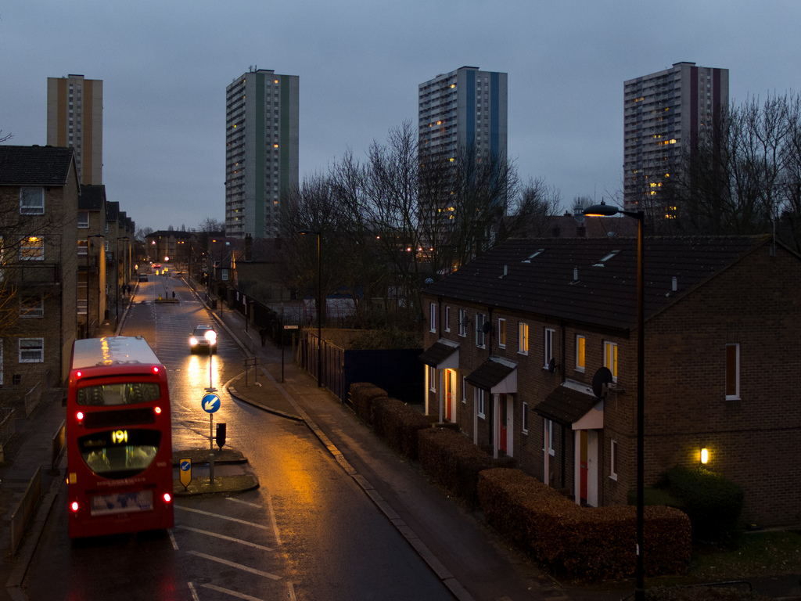
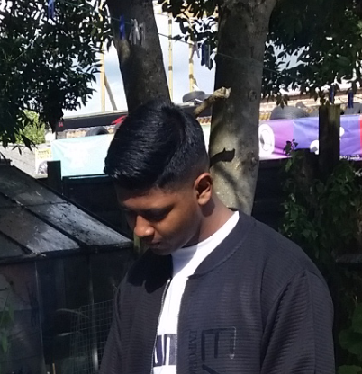
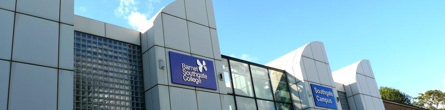
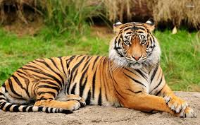
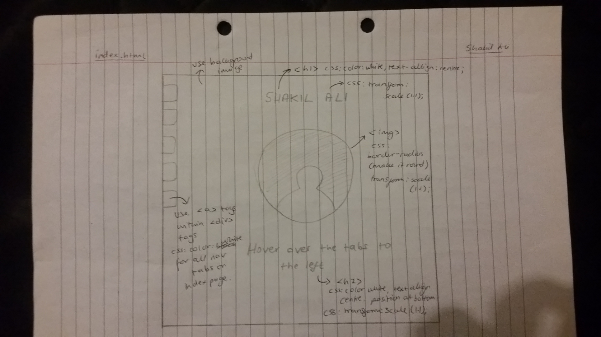

Website: http://doc.gold.ac.uk/~sali011/webdev/LargeCoursework/index.html
Report: http://doc.gold.ac.uk/~sali011/webdev/LargeCoursework/report.html
I have decided to make my website a story about my family's history and how it all led to the present day, me. I have chosen to implement a five-page structure, first page being an introduction page to my story website. This page is here as a starting point, from where the users can begin to navigate and read my content. The second page is about my maternal family and I have separated it into 'Origin', 'Occupation' and 'Coming to England'. Images are also included to give the user an insight into the places being described within the story. This allows users to pick which sections they want to read. My third page is related to my paternal family. It follows the same structure as the maternal page, with image and separated content areas. This gives the user freedom to pick what to engage with. My fourth page is on my parents and what their individual backgrounds were like. It starts off with my mum and is followed by my dad, and I have made sure to put it in an organised way. For example, I have sorted it so that for both parents, I talk about their childhood, then post marriage. In addition, using h3 header tags I made subheadings, which will make it easier for a user to search through the page and find what they want to read. My fifth and final page is about me. It is separated into 3 different topics: Background, Education and interests. Throughout my website I have maintained the same style and layout, which I believe shows a professional, organised website. In addition to the html and CSS, I have used JavaScript on all pages of my website (excluding index page). For instance, I have used the jQuery UI-widget, accordion, which helps to section out various parts of my content. As a result, users have control over what they will read. Also, it reduces what is currently displayed on the page, so the user is not overwhelmed with multiple pieces of text. Overall, I believe the way I have structured my website is simple, yet effective.
1) When beginning to design my wireframes for my website, I was inspired to make my introduction page like what I see in modern applications. For example, the circle image of me in my home page. I use apps such as Snapchat and Instagram, and noticed that profiles or 'stories' on these apps where always encapsulated in circles. Therefore, it inspired me to create my introduction page in the same way, as that’s what appeared to represent current styles.
2) In addition, I was influenced by web developer Dave Shea and his CSS Zen Garden Project. Before I started any CSS for my wireframes and website, I decided I would research. I came across Dave Shea and found his CSS Zen Garden Project quite fascinating. He demonstrated how CSS could be extensively used to create visually appealing websites. From his projects, I could see that CSS alone, when used correctly, could be so effective. This lead to me eventually coding a slideshow that was solely based on html and ccs.
3) Moreover, when I was in sixth form I attended a web development workshop carried out by City, University of London. I learnt to create wireframes as well as mobile versions for a main website. During the workshop I learnt what made a reliable website, and the basic requirements. It made me understand that a thorough website, had to be simplistic and well-structured, so that when users see it they understand what’s being conveyed, whilst not lacking any attention to detail. There must be an equilibrium between content and design.
Extra information: Furthermore, I got motivated by my holiday in the summer to Bangladesh. When contemplating what my site should be about, I realised that the best source of inspiration was my ethnic origins. Also, to get the basic idea of my family story I made phone calls to various family members and noted their intakes.
1) Throughout my html, I have used the alt attribute within all my image tags. The alt attribute allows me to add a comment to specific images. Therefore, if a user has a slow connection or my src has failed to load, there will still be information regarding the image. Also, if a blind person is using a screen reader to view my website, the alt tag will be read out, so the user is still informed of the image on screen. In addition, I have made sure to make my alt attributes describe the image as best as possible. As a result, improving accessibility.
2) I have well-structured html. For example, in my html I used h1 tags for my main page titles and h3 tags as subheadings. I kept this same structure through my entire webpage. This makes sure that if a blind user is making use of a screen reader, it can navigate my page easily, by looking for these specific tags. Therefore, this makes my website more accessible.
3) Another aspect of my website which makes it accessible is that the whole website can be accessed and navigated, via the keyboard. This means users who do not have a mouse, or have trouble with using a mouse can have the same experience by using only the keyboard. Therefore, this makes my website practicable.
1) One way I have considered usability in my website is by having assorted colours for each navigation tab. This way when users are navigating from page to page in my site, they can begin to associate a certain colour with a specific page. For example, I have made my maternal page navigation tab red, this way when users are on another page and want to return to the maternal one, they unconsciously know red is related to that page.
2) Another way I have considered usability in my website is by making selectable features either very long, filling the width of the page, or quite big. For example, the sortable items were initially very short. I then changed the dimensions to make it fill the box it is in, which made it almost the width of the page. This means users who may be neurological patients, which could suffer from hand tremors, will not have an issue in selecting my objects.
3) My website considers usability as I have made sure to make it responsive. For instance, the images I have in my website change when the window is resized. As well as this, I have made sure to add scroll bars to pictures so that if the window is resized, the full image can still be viewed. Also, when my website is viewed on a smaller device it changes the display to become more appropriate for that device's screen size. Furthermore, I have made sure to include @media in my website. An example of @media in my site include a different navigation display for smaller/bigger window sizes. As a result, users will not experience a dip in quality when changing device to view my website. Below is an image of what my page looks like for mobile users (note how I have considered that most mobile users will not be able to hover over tabs). Here is my clickable drop down menu:
1) When creating my website, I had to do a lot of research to find techniques and codes that will allow me to make my desired site. When creating my slideshow, I discovered that the code for it made a slider, however, it was very delayed, and the image holder had a different style to what I wanted. This lead to me using w3schools to find out what some of the CSS properties used meant. For example, I discovered that webkit-transition is for chrome and safari, transition-moz is for Mozilla browsers, transition-o is for opera browsers and transition is for Microsoft browsers (e.g. Microsoft Edge). I then included these, so the slideshow works on multiple different browsers. In addition, I reduced the duration of the transition to 1 second, to enhance the effect of a responsive slideshow. Moreover, I changed the image holder so that it became rectangular and added a thick, black border. Overall, from the slideshow code that I researched online, I manipulated it to create something that I wanted for my website, as well as learning new CSS properties in the process.
2) After finishing the html and CSS for my website, I had to add the JavaScript. Throughout my website you can find at least one piece of JavaScript per page (excluding my introduction page). I used different jQuery ui-widgets such as the accordion and dialog boxes, and these required specific libraries and code to make them function. To know how to use them within my site, I used a combination of my lecture notes and online videos. This allowed me to discover what parts of the code are vital and which are not so essential. Overall, I now know how to add jQuery libraries and implement jQuery ui-widgets.
3) My initial website lacked responsive behaviour. I realised that my hover able navigation tabs would be ineffective to use on touchscreen devices (unless air view is being used). This meant that I had to learn how to create responsive behaviour, which would change my navigation system, so it is usable on various devices. Firstly, I researched how to make my navigation tabs into a vertical, clickable menu. However, upon conducting this research, I came across a few obstacles. For instance, most websites I went on had differently structured navigation systems to me (e.g. top navigation bar). I did not find a page which demonstrated how to make hover able nav tabs responsive. In addition, I soon noticed that in most CSS code, there was @media enquiries with certain widths and heights. I then proceeded to write my own @media (using w3Schools: https://www.w3schools.com/css/css_rwd_mediaqueries.asp), with 500px as the maximum for the device width, which would correspond to the touch screen devices. Therefore, I was then able to create and style my drop-down menu, which made it more accessible to touch screen users. During the process of making my separate navigation menu, I learnt how to smartly and efficiently implement @media to my website.
An aspect I think went well was making wireframes. When constructing my website, I created initial wireframes. After more research, I revised my wireframes to meet my new expectations. This allowed me to have a much clearer idea of what I wanted my end product to look like. Therefore, by taking the time to make the best wireframes possible ensured that I didn't waste time later. Also, it meant that I knew what I had to do, instead of spontaneously coding and creating a website.
In addition, I believe the research element of my work went well. The use of w3schools and other websites allowed me to not only understand new techniques, but also how to apply them. This was a major factor of my work, as I am new to web development, and am not too familiar with certain aspects such as JavaScript. Therefore, research was a fundamental in helping me create my story website.
Furthermore, I feel that the design element of my website went well and to my expectations. I already explained above how I got the inspiration for the appearance of my introduction page. The part of my website that I think worked well in the design aspect, was the navigation tabs, vertically placed on the left-hand side. When choosing which type of navigation menu, I should have, I felt that I needed to reflect a story type theme. Therefore, I decided to go for the nav tabs as they, for me, resembled bookmarks. Also, the content pages of my site have a background image, which has a similar colour to pages, to reflect pages in a book. As well as this, I have designed it so that my home (index) page has a different background to the content pages, as to portray a book cover and its pages, respectively.
Extra information: Another aspect of my site which I think went well was the uniqueness of the design and interactivity. When conducting research to get an idea of what story-telling websites should look like, I did not come across any sites which had similar attributes to mine. For example, I've included interactivity in the form of facts, and made a short activity for users who want to really engage with my story. Therefore, I feel as though I have created something exclusive and worthwhile.
Although I finished my website to a standard I am happy with, I do believe given more time my site could have been improved. An aspect of my website that I could revise would be the accessibility. The accessibility features already within my website include alt attributes on all images and well-structured html, which increases efficiency for screen readers. Thus, allowing blind users to have an improved experience. However, I think my current website lacks more complex accessibility features such as using colour to represent different ideas and themes. For example, viewers of my website who have learning disabilities may find it beneficial if I had diverse colours representing different areas of my page. Therefore, if I were to improve the site in future, colour coordination would be a significant factor to consider. Also, I did research how to make keyboard shortcuts, but I did not implement them as I needed some separate libraries called mousetrap or hotkeys. In future work, to make my site more accessible, I would include keyboard shortcuts, to significant parts of my page.
In addition, I could improve how well the website functions without JavaScript. For example, if a user does not have JavaScript enabled, then they would not be able to do the activity on my paternal page, which is interactive. Therefore, in future I would look to develop the CSS and html aspects of my site. However, I did begin to overcome this issue as I made a slideshow which is totally interactive, and works solely on CSS. This eliminates the problem for users who have JavaScript disabled.
Furthermore, another aspect of my website that I could develop would be the design element of each page. I believe my current design is enticing and welcoming, however, it is too simplistic. Throughout my web pages there is a constant structure and style, although it is not as original as I could've made it. If I were to create my site again, I would change the appearance of my navigation system. For example, on my introduction page I would turn the side nav tabs into circular buttons which surround my image in the centre. This would make it unique and more appealing visually.
Philstar.com,'Wanted by NASA: Planet protector vs aliens',2017. [Online].Available: http://media.philstar.com/images/the-philippine-star/headlines/20170804/Wanted.jpg. [Accessed: 15-Dec-2017].

T.Walder,'Alexis Street School, Southwark',2011. [Online]. Available: http://www.victorianschoolslondon.org.uk/lib/images/TH-212818-proc-8alexisstreettw1.jpg. [Accessed: 15-Dec-2017].
Pakistan Ka Khuda Hafiz, 'Give up terrorism and we’ll give you cash – Bangladesh’s offer to militants', 2016. [Online]. Available: https://www.pakistankakhudahafiz.com/pkkhnew/wp-content/uploads/2016/10/bang-MMAP-md.png. [Accessed: 15-Dec-2017].

Wikipedia, 'Flag of Bangladesh - Wikipedia', 2017. [Online]. Available: https://upload.wikimedia.org/wikipedia/commons/thumb/f/f9/Flag_of_Bangladesh.svg/2000px-Flag_of_Bangladesh.svg.png. [Accessed: 15-Dec-2017].

The Enfield Society, 'The Enfield Society : pictures', 1977-08. [Online]. Available: https://www.enfieldsociety.org.uk/photographs/albums/uploads/uploadsSC003000/normal_SC003370.jpg. [Accessed: 15-Dec-2017].
Pinterest, 'Bangladesh | Rice fields in Bangladesh', 2017. [Online]. Available: https://i.pinimg.com/564x/39/07/15/390715e576708b9078edc1777e29a646--mother-india-beautiful-sites.jpg. [Accessed: 15-Dec-2017].

Gold.ac.uk, 'Goldsmiths named one of the top 10 universities in London', 2017. [Online]. Available: https://www.gold.ac.uk/media/169-images/macosx/960x540-generic/20140530_2BQ_0300.jpg. [Accessed: 15-Dec-2017].

Yelp, 'Massala Queen - 750 Hertford Road London EN3 6PR Enfield', 2017. [Online]. Available: https://s3-media1.fl.yelpcdn.com/bphoto/j6LIr8pNj_qCpT9_vVQyhA/ls.jpg. [Accessed: 15-Dec-2017].
TheWallpaper.co, 'blue winter night wallpaper background images windows mac apple amazing desktop wallpapers free high definition 1920×1200 Wallpaper HD', 2016. [Online]. Available: http://thewallpaper.co/wp-content/uploads/2016/10/Blue-Winter-night-wallpaper-background-images-windows-mac-apple-amazing-desktop-wallpapers-free-high-definition-1920x1200.jpg. [Accessed: 15-Dec-2017].
picssr.com, 'Alma Road Estate, Ponders End', 2015. [Online]. Available: https://farm8.staticflickr.com/7492/15982940327_b8452a388c_b.jpg. [Accessed: 15-Dec-2017].
S.Ali, 'Shakil', 2017. [Not Online - my image].
Barnet and Southgate College, 'Southgate Campus', 2017. [Online]. Available: http://www.barnetsouthgate.ac.uk/var/plain_site/storage/images/home-barnet-and-southgate-college/the-college/college-locations-and-training-centres/southgate-campus/11510-15-eng-GB/southgate-campus_schools.jpg. [Accessed: 15-Dec-2017].
Tripadvisor.co.uk, 'Photo: Stalls filled with Bangladesh-made items at Dawki', 2017. [Online]. Available: https://media-cdn.tripadvisor.com/media/photo-s/0f/85/2d/40/stalls-filled-with-bangladesh.jpg. [Accessed: 15-Dec-2017].

Wikipedia, 'Ali Amjad's Clock - Wikipedia', 2017. [Online]. Available: https://upload.wikimedia.org/wikipedia/commons/7/77/Keane_Bridge_and_Ali_Amjad%27s_Clock%2C_Sylhet.jpg. [Accessed: 15-Dec-2017].

degrassi.wikia.com, 'Beautiful tiger.jpg', 2015. [Online]. Available: https://vignette.wikia.nocookie.net/degrassi/images/1/1a/Beautiful_tiger.jpg/revision/latest?cb=20150408031322. [Accessed: 15-Dec-2017].
Amazon.com, 'Graham and Brown Nottingham Wallpaper - Cream', 2011. [Online]. Available: https://images-na.ssl-images-amazon.com/images/I/61pPE7JcfWL._SY587_.jpg. [Accessed: 15-Dec-2017].
Jute-laden trucks, 'Dhaka: 68 jute-laden trucks stranded at Benapole border as India imposes anti-dumping duty', 2017. [Online]. Available: http://media2.intoday.in/indiatoday/images/stories/jute-truck_story-647_010917084703.jpg. [Accessed: 15-Dec-2017].

I used this code in my index page to help create my navigation tabs:
w3schools.com, 'How TO - Side Navigation Buttons', 2017. [Online]. Available: https://www.w3schools.com/howto/howto_css_sidenav_buttons.asp. [Accessed: 15-Dec-2017].
I used this website to help me assess my websites accessibility:
Berkeley web access,'Top 10 Tips for Making Your Website Accessible', 2017. [Online]. Available: https://webaccess.berkeley.edu/resources/tips/web-accessibility. [Accessed: 15-Dec-2017].
I used this code in my head tags for the accordion widget, dialog boxes, sortable lists and drag/drop box:
jQuery UI, 'Accordion', 2017. [Source code]. https://jqueryui.com/accordion/
I used this code in my 'me' page in order to create my slideshow:
QNimate, 'Image Slider Using HTML And CSS Only', 2014. [Source code]. http://qnimate.com/creating-a-slider-using-html-and-css-only/
I used this code to help me create my drop down menu:
w3schools.com, 'CSS - Dropdowns', 2017. [Online]. Available: https://www.w3schools.com/css/css_dropdowns.asp. [Accessed: 15-Dec-2017].
Here are screenshots of each page with just html:
Here are screenshots of each page with both html and css:
Here are screenshots of each page with html, css and javascript:
Here are screenshots of each page with html, css and javascript on a mobile device:
Here are my intial wireframes
Here are my final wireframes that I used to make my website
Here are my mobile version wireframes